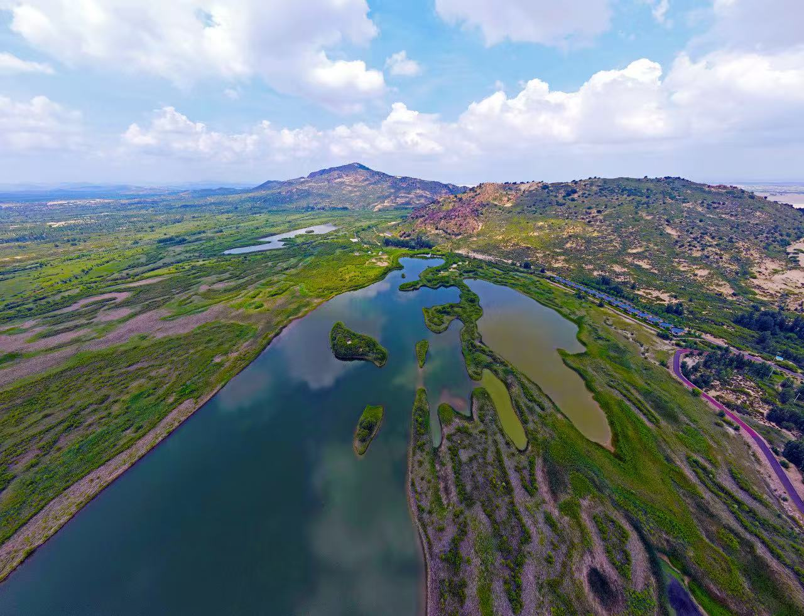
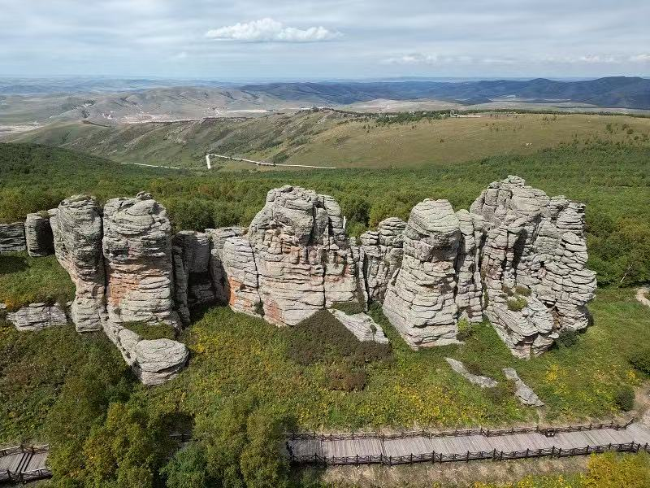

草原骑马体验
策马奔腾，感受草原儿女的自由豪情
推荐地点：乌兰布统、贡格尔草原
最佳季节：6月-9月
体验时长：1-3小时
价格：100-300元/小时
草原骑马 · 灵魂之旅
骑马是体验草原文化最直接、最深入的方式。当你跨上马背，手握缰绳，迎着草原的风缓缓前行——脚下是无边的绿色，头顶是湛蓝的天空，远处是连绵的丘陵和成群的牛羊。这一刻，你不再是匆匆的游客，而是草原的孩子。
在赤峰，无论是乌兰布统的欧式草原，还是贡格尔的原始牧场，都提供完善的骑马体验服务。从零基础的初学者到经验丰富的骑手，都能找到适合自己的路线。专业的蒙古族马倌会全程陪同，教你最基本的骑马技巧，让你在安全的环境中感受驰骋草原的快乐。



推荐骑马地点
乌兰布统草原
赤峰最成熟的骑马体验区，马匹经过专业训练性格温顺，路线覆盖草原、白桦林和湖泊，风景多样。提供半小时到全天的多种套餐。
贡格尔草原
相比乌兰布统更为宁静原始，可以在牧民的带领下深入草原腹地，体验真正的游牧骑马生活。适合追求深度体验的旅行者。
灯笼河草原
位于翁牛特旗，是赤峰新兴的骑马目的地。草原开阔平坦，非常适合初学者练习骑马，性价比高。
玉龙沙湖骑骆驼
除了骑马，在玉龙沙湖还可以体验骑骆驼穿越沙漠的独特感受，沙海驼铃是赤峰独有的旅行记忆。
骑马小贴士
- 穿长裤和运动鞋，不要穿裙子或拖鞋骑马
- 上马前认真听取马倌的安全讲解，了解基本指令
- 不要从马的后方靠近，以免被踢到
- 骑马时保持放松，身体随马的节奏自然起伏
- 不要大声喊叫或做出突然动作惊吓马匹
- 初次骑马建议选择30分钟至1小时的短程体验
- 手机和相机务必挂绳固定，防止掉落
- 高血压、心脏病患者和孕妇不建议骑马